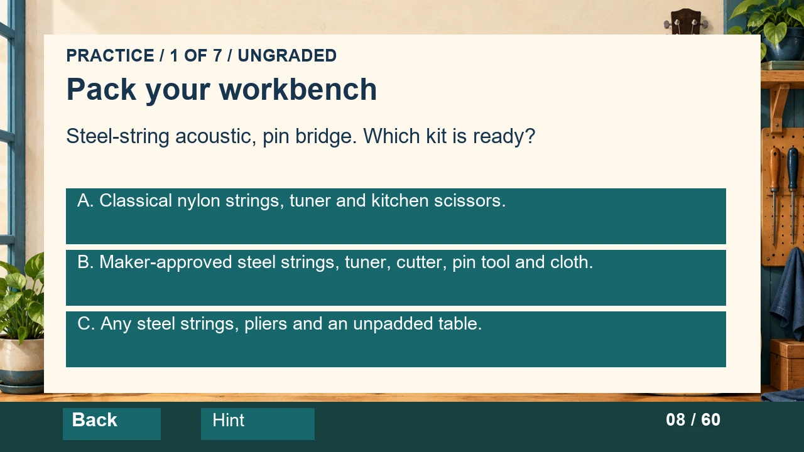
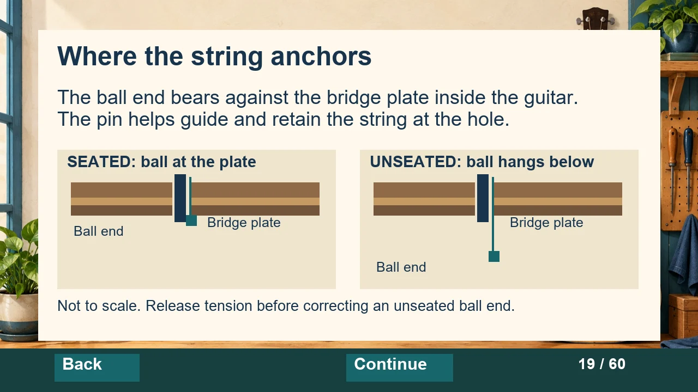
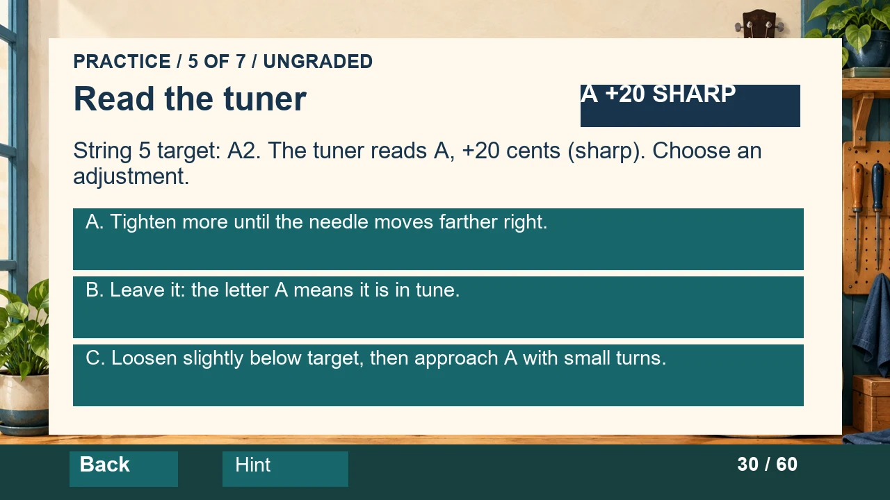

Prepare and sequence
Select a suitable workbench kit, choose controlled removal steps, and order installation actions.
Procedural learning · Articulate Storyline
From following steps to making sound decisions: prepare the instrument, recognize a seating problem, and interpret the tuner.
Download Storyline project (.story) Explore the lesson design
Interactive v2 · Development preview. Requires Articulate Storyline to open. Native playback and accessibility validation are pending; this version is not yet available as a browser course.
The 60-slide lesson includes seven ungraded mini tasks, eight decision screens and a 20-question knowledge check. Choice-specific feedback explains the consequence and supports another attempt.
Select a suitable workbench kit, choose controlled removal steps, and order installation actions.
Respond to a rising bridge pin, interpret a sharp tuner reading, and investigate persistent slipping pitch.
Approve a preparation plan, inspect the result, then demonstrate a string change with an experienced observer.

An editable cross-section compares a seated ball end with one hanging below the bridge plate. The associated task asks learners what to do when the bridge pin rises during winding.

The tuner task presents A at +20 cents. Learners choose an adjustment and receive feedback about pitch direction and checking the target octave.

The quiz uses a 160/200 passing threshold. Physical skill is assessed separately: an observer records independent, prompted or not-yet performance for preparation, removal, seating, routing, winding, tuning and final inspection.
Download the practical checklist
Audience and scope: beginners using a six-string steel-string acoustic with a pin bridge and ordinary tuning posts. Hardware-specific preparation and winding follow the instrument maker's guidance.
The revision replaces passive reveals with decisions, adds targeted feedback and retry routes, and makes the final demonstration observable. Offline checks covered package structure, all 24 choice routes and custom-score simulations at 200, 160, 150 and 0 points, including retry and duplicate-award guards. Approximate layout review found no remaining estimated text overflow.
Full native playback, displayed results, keyboard operation and screen-reader checks remain pending. No learner-outcome study is claimed.